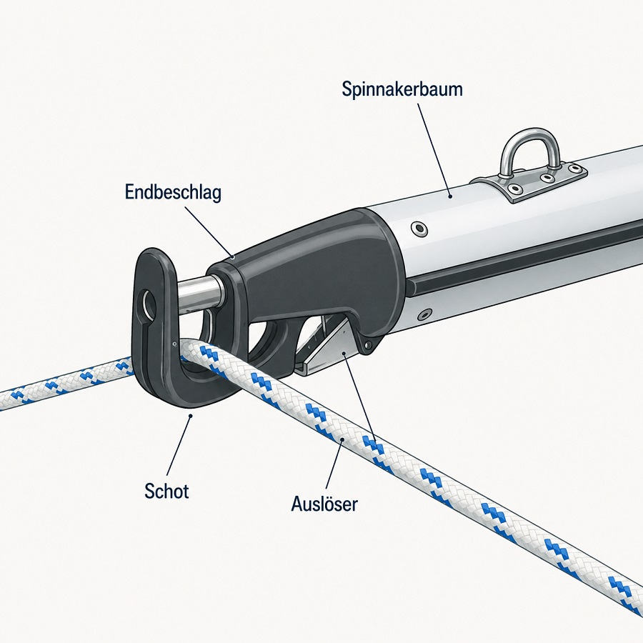
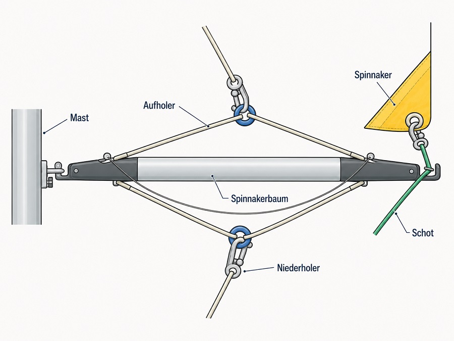

On this Page
Der Spinnaker
Der Spinnaker ist das leistungsfähigste Segel auf allen Raumschotskursen oder vor dem Wind. Mit dem Baum läßt sich die „Blase“ weit aus der Abdeckung des Großsegels bringen, so daß die gesamte Segelfläche zum Tragen kommt.
Der Hauptzweck des Leichtwindsegels ist es, die Segelfläche auf Kursen vorlicher als halber Wind deutlich zu vergrößern. Denn Jachten mit Bermuda Rigg kommen mit konventionellem Tuch vor dem Wind nur langsam voran. Typische Spinnaker sind symmetrisch geschnitten. Daneben gibt es asymmetrische Spinnaker und Gennaker.
Durch das Verhältnis der Fahrt des Bootes zur Windgeschwindigkeit wird sehr schnell ein Halbwindkurs erreicht: Je mehr nämlich das Boot Fahrt aufnimmt, desto spitzer fällt der (scheinbare) Wind von vorn ein. Das Liek beginnt einzufallen, und man wird gezwungen, abzufallen. Kurz: Zunehmende Bootsgeschwindigkeit kostet Höhe
Vorbereitung
- der Spinnaker-Baum am Mast einklinken (Öffnung oben)
- Toppnacht + Niederholer einstellen, dass Baum parallel zum Wasser steht


- Spinnaker im Sack an der Reling befestigen, Schothörner vorbereiten
- Acherholer (Luv) durch hintere Umlenkrolle und (innerhalb der Reling) zum Barberhauler führen, von dort außerhalb weiter
- Barberhauler dicht holen
- Achterholer bis zum Spibaum (durch die Nock)
- Achterholer vor dem Vorstag herum
- Acherholer zwischen Relingsdraht und Unterliek der Genua führen und beim entsprechenden Schothorn bzw. Hals einklinken
- Spi-Schot (Lee) durch hintere Umlenkrolle und (innerhalb der Reling) zum Barberhauler führen, von dort außerhalb weiter
- Spi-Shot zwischen Relingsdraht und Unterliek der Genua führen und beim entsprechenden Schothorn einklinken
- Spi-Fall zwischen Relingsdraht und Unterliek der Genua führen und beim Kopf einklinken (Achtung: Spi-Fall und Vorstag dürfen sich nicht vertwisten)
- ?? Spi-Schot und Achterholer vorläufig auf der Achterklampe belegen, weil Genua-winsch noch nicht frei ist
Setzen des Spi
- Der Wind muss acherlicher als querab einfallen: Raumwindkurs (bei starkem Wind: annähernd vor dem Wind für bessere Abdeckung des Spi)
- Spi soll vom Großsegel (Genua) abgedeckt werden (Spi darf sich erst mit Luft füllen, wenn die Crew zum Dichtholen der Schoten bereit ist)
- Großschot entsprechend fieren
- Genua dicht holen/lassen
- Spi-Unterliek spannen: Achterholer soweit anziehen, dass Hals den Spi-Baum (ganz vorn, fast beim Vorstag) berührt.
- Mit Spi-Schot Schothorn fast bis zum Cockpit ziehen, dabei darauf achten, dass der Wind das Segel nicht von Bord weht.
- Das verhindert, dass sich ein Stundenglas bildet. Ein gesetztes Vorsegel verhindert, dass sich der Spi um den Vorstag wickelt.
- Mit Spi-Fall den Spi im Windschatten des Vorsegels + Groß hochhziehen
- Wenn von der Leienführung möglich: Spi am Vorschiff von Hand hochziehen, Cockpitcrew holt nur dicht
- Genua einrollen
- Spi-Schoten dichtholen/trimmen
Segel-Trimm
- Spinnakerbaum so weit es geht nach Luv.
- das Spi-Unterliek soll dabei aber vom Vorstag nicht abgeknickt werden.
- Baum zu weit gefiert = Schot ebenfalls stark fieren -> Unterliek zu weit vor dem Boot: Angriffsfläche für den Wind verringert sich + Vortrieb geht verloren
- Perfekter Trimm: Spi-Unterliek tippt hin und wieder leicht gegen das Vorstag.
- konstante Windbedingungen: Luv-Shot belegen und Spi wird ausschließlich mit der Lee-Schot getrimmt
- Lee-Schot ständig dichtholen, sobald Luv-Liek einzuklappen beginnt, und fieren bis das Unterliek einzufallen beginnt Dabei muß diese
- Wenn der Spi länger prall steht, ist die Leeschot zu dicht
- Je stärker und vorlicher der Wind: umso schwerer ist Rudergehen.
- In Böen rechtzeitig (!) abfallen um starkes Krängen zu vermeiden
- Eventuell auch Lee-Schot fieren und Spi-Baum nach Luv ziehen.
- Droht die Jacht aus dem Ruder zu laufen: Lee-Schot weit fieren/loswerfen (Spi weht wie eine Flagge nach Lee, weit weg vom Rigg, es entsteht kein Schaden)
- In kritischen Situationen NIEMALS die Luv-Shot werfen, das wird die Krängung weiter verschlimmern
- Die Höhe des Spinnakerbaums hängt vom Kurs und Windstärke ab: beide Schothörner sollen etwa auf gleicher Höhe sein
- Ist das Lee-Schothorn zu hoch, ist das Lee-Liek zu offen - Vortrieb geht verloren
- Ist das Lee-Shothorn zu tief, dann schließt das Lee-Lieck: höhere Kränung + bremsende Abwinde
- Windige Vorwindkurse: Spi kann Boot aufschaukeln und zum Rollen und Gieren bringen
- Dann muss der Rudergänger dem Spi "hinterher fahren": Zieht der Spi den Mast nach Luv: anlufen. Kränung nach Lee: abfallen
Halse unter Spi
- Vorbereitung: Leinen im Cockpit klarieren (v.a. Schoten und Barberhauler)
- 1. Phase: Lee-Barberhauler dichtnehmen und Schot neu trimmen (wichtig, sonst lässt sich Baum später nciht einpicken; Alternative: Barberhauler nicht dichtnehmen)
- Die Mitte des Spi (Unterliek) soll entlang des Vorstags verlaufen (so soll es während der gesamten Halse bleiben)
- Nun gibt der Spi die Richtung an: Wandert er nach Luv, muss man anluven, wandert er nach Lee, dann abfallen
- 2. Phase: langsam abfallen, gleichzeitig Großsegel fieren
- Segel nur so weit fieren, dass Spi gerade nicht einfällt (luvseitig)
- 3. Phase: Beide Barberhauler sollen dichtgenomen sein, damit der Spi vor dem Schiff nicht geigt
- Das Mastende des Spi-Baums vom Mast lösen und damit nach Lee, Leeshot beim Spi Baum einklinken
- zügig abfallen, damit das Boot Blatt vor dem Wind liegt
- Großsegel jetzt shiften
- Die nun (neue) Lee-Schot aus dem Spi-Baum lösen (Achtung: nicht beide Beschläge öffnen)
- (Neuen) Lee-Barberhauler lösen + Luv-Schot fieren (dadurch steht der Spi weiter vor dem Boot, was der Vorschiffscrew erleichtert, den Baum am Mast einzupicken)
- Zum Einpicken muss der Spi-Baum nach vorne gedrückt werden
- Ist das Einpicken nicht mögich: beide Schoten gleichzeitig fieren
- Auf richtigen Kurs anluven - Halse ist abgeschlosen
Den Spi bergen
- Auch bei viel Wind problemlos
- Kurs annähernd vorm Wind
- Spi-Baum langsam fieren + Leeschot dichtholen
- Spi fällt in der Abdeckung des Groß ein und kann ohne Hektik eingeholt werden
- Spi-Fall und Luv-Schot dabei